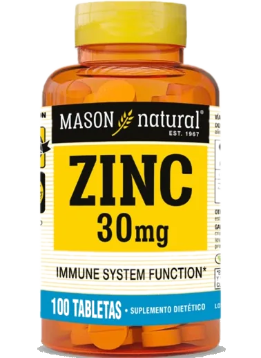
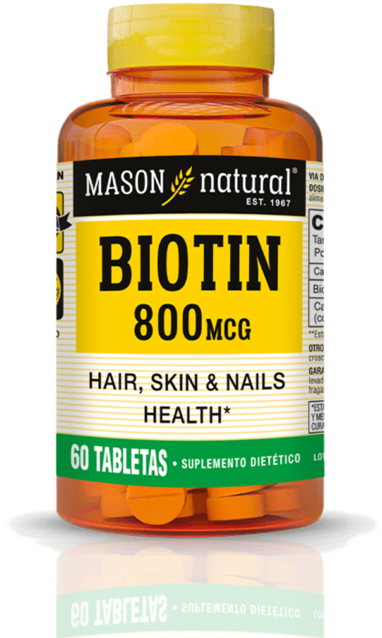

06 · Duplas perfectas y packs
Página nueva. Duplas tomadas del archivo «Colaboración entre nutrientes» de Víctor (12/11), con su frase literal. El texto final y el ahorro los valida nutrición.
‹Envío gratis por compras mayores a S/250. Válido solo para Lima Metropolitana|Vitaminas y suplementos desde S/30.90|Suscríbete al Club Mason y obtén descuentos todos los días›
Arma tu plan
20 · Duplas perfectasCambio v3: página nuevaAcordado: duplas del archivo de VíctorCondicionado: texto final, precio y ahorroen el archivo, Glicinato Plus, Citrato, Biotina 5,000/10,000 y B-12 1,000/3,000 no tienen frase: no se incluyen
Duplas perfectas
Productos que se llevan bien juntos, explicados por nuestro equipo de nutrición. texto de ejemplo
 +
+
K2 + D3 con Glicinato de Magnesio
«El magnesio contribuye al buen funcionamiento de los huesos.»
Frase del archivo «Colaboración entre nutrientes» · la valida nutrición
S/ XX ahorro por definirLlevar los dos
 +
+
Omega 3 con Garlic Oil
«El ajo es tradicionalmente recomendado en la promoción de la salud cardiovascular.»
Frase del archivo «Colaboración entre nutrientes» · la valida nutrición
S/ XX ahorro por definirLlevar los dos
 +
+
Vitamina E con Vitamina C
«La vitamina C ayuda a regenerar la forma reducida de la vitamina E.»
Frase del archivo «Colaboración entre nutrientes» · la valida nutrición
S/ XX ahorro por definirLlevar los dos
 +
+frasco
Vitamina A
(falta foto)
Vitamina A
(falta foto)
Luteína con Vitamina A
«La vitamina A ayuda al mantenimiento de la visión en condiciones normales.»
Frase del archivo «Colaboración entre nutrientes» · la valida nutrición
S/ XX ahorro por definirLlevar los dos

+Zinc con Vitamina C
«La vitamina C ayuda al buen funcionamiento del sistema inmunológico.»
Frase del archivo «Colaboración entre nutrientes» · la valida nutrición
S/ XX ahorro por definirLlevar los dos

+Biotina 800 mcg con Zinc
«El zinc ayuda al mantenimiento del cabello, piel y uñas en condiciones normales.»
Frase del archivo «Colaboración entre nutrientes» · la valida nutrición
S/ XX ahorro por definirLlevar los dos
 +
+L-Arginina con Zinc
«El zinc contribuye a la formación normal de proteínas.»
Frase del archivo «Colaboración entre nutrientes» · la valida nutrición
S/ XX ahorro por definirLlevar los dos
 +
+frasco
(falta foto)
(falta foto)
Enzimas digestivas con Calcio
«El calcio contribuye al buen funcionamiento de las enzimas digestivas.»
Frase del archivo «Colaboración entre nutrientes» · la valida nutrición
S/ XX ahorro por definirLlevar los dos
21 · PacksAcordado: packs en Compra (landings)Condicionado: productos y precio especial, se confirma al probar la tienda conectada a SAP
Packs
Foto del pack (3 frascos)
Pack 1
nombre y productos del pack por definir
S/ XXAntes S/ XX+
Foto del pack (3 frascos)
Pack 2
nombre y productos del pack por definir
S/ XXAntes S/ XX+
Foto del pack (3 frascos)
Pack 3
nombre y productos del pack por definir
S/ XXAntes S/ XX+
15 · Pie de páginaAcordado: orden de Víctor 12/11 y «Términos y condiciones»Cambio v3: fondo claro, sin negro
Corporación Arion SAC
Expertos en vitaminas
Compra
Todos los productos
Más vendidos
Por objetivo
Packs
Descubre
Nosotros
Ciencia y calidad
Journal
Club Mason
Nuestras tiendas
Asesoría nutricional
Ayuda
Preguntas frecuentes
Contacto
Términos y condiciones
Políticas de privacidad
Libro de reclamaciones
Síguenos
Instagram · Facebook · TikTok
Pagos
Tarjeta · Contra entrega
medios vigentes al publicar (fase A2)
© 2026 Mason Natural · Corporación Arion SACLibro de reclamaciones